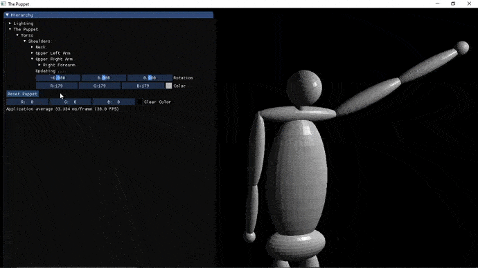

<h1 id="the-puppet">The Puppet</h1>
<p><a href="https://github.com/JacobHdez/The-Puppet/issues"></a> <a href="https://github.com/JacobHdez/The-Puppet/network"></a> <a href="https://github.com/JacobHdez/The-Puppet/stargazers"></a> <a href="https://github.com/JacobHdez/The-Puppet"></a> <br>  </p>
<p><br>  <br></p>
<h2 id="description">Description</h2>
<p>Se implemento una camara de perspectiva </p>
<h2 id="fuentes">Fuentes</h2>
<ul>
<li><a href="https://www.youtube.com/playlist?list=PLlrATfBNZ98foTJPJ_Ev03o2oq3-GGOS2">The Cherno - OpenGL Series</a></li>
<li><a href="https://learnopengl.com">Learn OpenGL</a></li>
<li><a href="http://www.opengl-tutorial.org/es/">OpenGl - Tutorial</a></li>
</ul>
